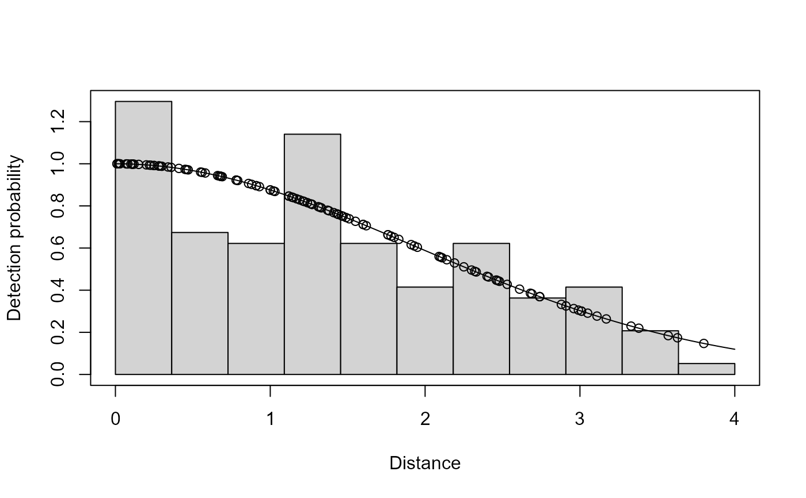

Fit detection functions and calculate abundance from line or point transect data
Source:R/ds.R
ds.RdThis function fits detection functions to line or point transect data and
then (provided that survey information is supplied) calculates abundance and
density estimates. The examples below illustrate some basic types of
analysis using ds().
Usage
ds(
data,
truncation = ifelse(is.null(cutpoints), ifelse(is.null(data$distend),
max(data$distance), max(data$distend)), max(cutpoints)),
transect = "line",
formula = ~1,
key = c("hn", "hr", "unif"),
adjustment = c("cos", "herm", "poly"),
nadj = NULL,
order = NULL,
scale = c("width", "scale"),
cutpoints = NULL,
dht_group = FALSE,
monotonicity = ifelse(formula == ~1, "strict", "none"),
region_table = NULL,
sample_table = NULL,
obs_table = NULL,
convert_units = 1,
er_var = ifelse(transect == "line", "R2", "P2"),
method = "nlminb",
mono_method = "slsqp",
quiet = FALSE,
debug_level = 0,
initial_values = NULL,
max_adjustments = 5,
er_method = 2,
dht_se = TRUE,
optimizer = "both",
winebin = NULL,
dht.group,
region.table,
sample.table,
obs.table,
convert.units,
er.var,
debug.level,
initial.values,
max.adjustments
)Arguments
- data
a
data.framecontaining at least a column calleddistanceor a numeric vector containing the distances. NOTE! If there is a column calledsizein the data then it will be interpreted as group/cluster size, see the section "Clusters/groups", below. One can supply data as a "flat file" and not supplyregion_table,sample_tableandobs_table, see "Data format", below andflatfile.- truncation
either truncation distance (numeric, e.g. 5) or percentage (as a string, e.g. "15%"). Can be supplied as a
listwith elementsleftandrightif left truncation is required (e.g.list(left=1,right=20)orlist(left="1%",right="15%")or evenlist(left="1",right="15%")). By default for exact distances the maximum observed distance is used as the right truncation. When the data is binned, the right truncation is the largest bin end point. Default left truncation is set to zero.- transect
indicates transect type "line" (default) or "point".
- formula
formula for the scale parameter. For a CDS analysis leave this as its default
~1.- key
key function to use;
"hn"gives half-normal (default),"hr"gives hazard-rate and"unif"gives uniform. Note that if uniform key is used, covariates cannot be included in the model.- adjustment
adjustment terms to use;
"cos"gives cosine (default),"herm"gives Hermite polynomial and"poly"gives simple polynomial. A value ofNULLindicates that no adjustments are to be fitted.- nadj
the number of adjustment terms to fit. In the absence of covariates in the formula, the default value (
NULL) will select via AIC (using a sequential forward selection algorithm) up tomax.adjustmentadjustments (unlessorderis specified). When covariates are present in the model formula, the default value ofNULLresults in no adjustment terms being fitted in the model. A non-negative integer value will cause the specified number of adjustments to be fitted. Supplying an integer value will allow the use of adjustment terms in addition to specifying covariates in the model. The order of adjustment terms used will depend on thekeyandadjustment. Forkey="unif", adjustments of order 1, 2, 3, ... are fitted whenadjustment = "cos"and order 2, 4, 6, ... otherwise. Forkey="hn"or"hr"adjustments of order 2, 3, 4, ... are fitted whenadjustment = "cos"and order 4, 6, 8, ... otherwise. See Buckland et al. (2001) p. 47 for details.- order
order of adjustment terms to fit. The default value (
NULL) results indschoosing the orders to use - seenadj. Otherwise a scalar positive integer value can be used to fit a single adjustment term of the specified order, and a vector of positive integers to fit multiple adjustment terms of the specified orders. For simple and Hermite polynomial adjustments, only even orders are allowed. The number of adjustment terms specified here must matchnadj(ornadjcan be the defaultNULLvalue).- scale
the scale by which the distances in the adjustment terms are divided. Defaults to
"width", scaling by the truncation distance. If the key is uniform only"width"will be used. The other option is"scale": the scale parameter of the detection- cutpoints
if the data are binned, this vector gives the cutpoints of the bins. Supplying a distance column in your data and specifying cutpoints is the recommended approach for all standard binned analyses. Ensure that the first element is 0 (or the left truncation distance) and the last is the distance to the end of the furthest bin. (Default
NULL, no binning.) If you have provideddistbeginanddistendcolumns in your data (note this should only be used when your cutpoints are not constant across all your data, e.g. planes flying at differing altitudes) then do not specify the cutpoints argument as this will cause thedistbeginanddistendcolumns in your data to be overwritten.- dht_group
should density abundance estimates consider all groups to be size 1 (abundance of groups)
dht_group=TRUEor should the abundance of individuals (group size is taken into account),dht_group=FALSE. Default isFALSE(abundance of individuals is calculated).- monotonicity
should the detection function be constrained for monotonicity weakly (
"weak"), strictly ("strict") or not at all ("none"orFALSE). See Monotonicity, below. (Default"strict"). By default it is on for models without covariates in the detection function, off when covariates are present.- region_table
data_framewith two columns:Region.Labellabel for the regionAreaarea of the regionregion_tablehas one row for each stratum. If there is no stratification thenregion_tablehas one entry withAreacorresponding to the total survey area. IfAreais omitted density estimates only are produced.
- sample_table
data.framemapping the regions to the samples (i.e. transects). There are three columns:Sample.Labellabel for the sampleRegion.Labellabel for the region that the sample belongs to.Effortthe effort expended in that sample (e.g. transect length).
- obs_table
data.framemapping the individual observations (objects) to regions and samples. There should be three columns:objectunique numeric identifier for the observationRegion.Labellabel for the region that the sample belongs toSample.Labellabel for the sample
- convert_units
conversion between units for abundance estimation, see "Units", below. (Defaults to 1, implying all of the units are "correct" already.)
- er_var
specifies which encounter rate estimator to use in the case that dht_se is TRUE, er_method is either 1 or 2 and there are two or more samplers. Defaults to "R2" for line transects and "P2" for point transects (>= 1.0.9, earlier versions <= 1.0.8 used the "P3" estimator by default for points), both of which assume random placement of transects. For systematic designs, alternative estimators may be more appropriate, see
dht2for more information.- method
optimization method to use (any method usable by
optimoroptimx). Defaults to"nlminb".- mono_method
optimization method to use when monotonicity is enforced. Can be either
slsqporsolnp. Defaults toslsqp.- quiet
suppress non-essential messages (useful for bootstraps etc). Default value
FALSE.- debug_level
print debugging output.
0=none,1-3increasing levels of debugging output.- initial_values
a
listof named starting values, seemrds_opt. Only allowed when AIC term selection is not used.- max_adjustments
maximum number of adjustments to try (default 5) only used when
order=NULL.- er_method
encounter rate variance calculation: default = 2 gives the method of Innes et al. (2002) , using expected counts in the encounter rate. Setting to 1 gives observed counts (which matches Distance for Windows) and 0 uses negative binomial variance (only useful in the rare situation where study area = surveyed area). See
dht.sefor more details, noting thiser_methodargument corresponds to thevarflagelement of theoptionsargument indht.se.- dht_se
should uncertainty be calculated when using
dht? Safe to leave asTRUE, used inbootdht.- optimizer
By default this is set to 'both'. In this case the R optimizer will be used and if present the MCDS optimizer will also be used. The result with the best likelihood value will be selected. To run only a specified optimizer set this value to either 'R' or 'MCDS'. See
mcds_dot_exefor setup instructions.- winebin
If you are trying to use our MCDS.exe optimizer on a non-windows system then you may need to specify the winebin. Please see
mcds_dot_exefor more details.- dht.group
deprecated, see same argument with underscore, above.
- region.table
deprecated, see same argument with underscore, above.
- sample.table
deprecated, see same argument with underscore, above.
- obs.table
deprecated, see same argument with underscore, above.
- convert.units
deprecated, see same argument with underscore, above.
- er.var
deprecated, see same argument with underscore, above.
- debug.level
deprecated, see same argument with underscore, above.
- initial.values
deprecated, see same argument with underscore, above.
- max.adjustments
deprecated, see same argument with underscore, above.
Value
a list with elements:
ddfa detection function model object.dhtabundance/density information (if survey region data was supplied, elseNULL)
Details
If abundance estimates are required then the data.frames region_table
and sample_table must be supplied. If data does not contain the columns
Region.Label and Sample.Label then the data.frame obs_table must
also be supplied. Note that stratification only applies to abundance
estimates and not at the detection function level. Density and abundance
estimates, and corresponding estimates of variance and confidence intervals,
are calculated using the methods described in Buckland et al. (2001)
sections 3.6.1 and 3.7.1 (further details can be found in the documentation
for dht).
For more advanced abundance/density estimation please see the
dht and dht2 functions.
Examples of distance sampling analyses are available at https://distancesampling.org/resources/vignettes.html.
Hints and tips on fitting (particularly optimisation issues) are on the
mrds_opt manual page.
Clusters/groups
Note that if the data contains a column named size, cluster size will be
estimated and density/abundance will be based on a clustered analysis of
the data. Setting this column to be NULL will perform a non-clustered
analysis (for example if "size" means something else in your dataset).
Truncation
The right truncation point is by default set to be largest observed distance or bin end point. This is a default will not be appropriate for all data and can often be the cause of model convergence failures. It is recommended that one plots a histogram of the observed distances prior to model fitting so as to get a feel for an appropriate truncation distance. (Similar arguments go for left truncation, if appropriate). Buckland et al. (2001) provide guidelines on truncation.
When specified as a percentage, the largest right and smallest left
percent distances are discarded. Percentages cannot be supplied when using
binned data.
For left truncation, there are two options: (1) fit a detection function to
the truncated data as is (this is what happens when you set left). This
does not assume that g(x)=1 at the truncation point. (2) manually remove
data with distances less than the left truncation distance – effectively
move the centre line out to be the truncation distance (this needs to be
done before calling ds). This then assumes that detection is certain at
the left truncation distance. The former strategy has a weaker assumption,
but will give higher variance as the detection function close to the line
has no data to tell it where to fit – it will be relying on the data from
after the left truncation point and the assumed shape of the detection
function. The latter is most appropriate in the case of aerial surveys,
where some area under the plane is not visible to the observers, but their
probability of detection is certain at the smallest distance.
Binning
Note that binning is performed such that bin 1 is all distances greater or equal to cutpoint 1 (>=0 or left truncation distance) and less than cutpoint 2. Bin 2 is then distances greater or equal to cutpoint 2 and less than cutpoint 3 and so on.
Monotonicity
When adjustment terms are used, it is possible for the detection function to not always decrease with increasing distance. This is unrealistic and can lead to bias. To avoid this, the detection function can be constrained for monotonicity (and is by default for detection functions without covariates).
Monotonicity constraints are supported in a similar way to that described
in Buckland et al. (2001)
. 20 equally spaced points over
the range of the
detection function (left to right truncation) are evaluated at each round
of the optimisation and the function is constrained to be either always
less than it's value at zero ("weak") or such that each value is
less than or equal to the previous point (monotonically decreasing;
"strict"). See also check.mono.
Even with no monotonicity constraints, checks are still made that the
detection function is monotonic, see check.mono.
Units
In extrapolating to the entire survey region it is important that the unit
measurements be consistent or converted for consistency. A conversion
factor can be specified with the convert_units argument. The values of
Area in region_table, must be made consistent with the units for
Effort in sample_table and the units of distance in the data.frame
that was analyzed. It is easiest if the units of Area are the square of
the units of Effort and then it is only necessary to convert the units of
distance to the units of Effort. For example, if Effort was entered
in kilometres and Area in square kilometres and distance in metres then
using convert_units=0.001 would convert metres to kilometres, density
would be expressed in square kilometres which would then be consistent with
units for Area. However, they can all be in different units as long as
the appropriate composite value for convert_units is chosen. Abundance
for a survey region can be expressed as: A*N/a where A is Area for
the survey region, N is the abundance in the covered (sampled) region,
and a is the area of the sampled region and is in units of Effort * distance. The sampled region a is multiplied by convert_units, so it
should be chosen such that the result is in the same units as Area. For
example, if Effort was entered in kilometres, Area in hectares (100m x
100m) and distance in metres, then using convert_units=10 will convert
a to units of hectares (100 to convert metres to 100 metres for distance
and .1 to convert km to 100m units).
Data format
One can supply data only to simply fit a detection function. However, if
abundance/density estimates are necessary further information is required.
Either the region_table, sample_table and obs_table data.frames can
be supplied or all data can be supplied as a "flat file" in the data
argument. In this format each row in data has additional information that
would ordinarily be in the other tables. This usually means that there are
additional columns named: Sample.Label, Region.Label, Effort and
Area for each observation. See flatfile for an example.
Density estimation
If column Area is omitted, a density estimate is generated but note that
the degrees of freedom/standard errors/confidence intervals will not match
density estimates made with the Area column present.
References
Buckland ST, Anderson DR, Burnham KP, Laake JL, Borchers DL, Thomas L (2001).
Introduction to distance sampling: estimating abundance of biological populations.
Oxford university press.
Innes S, Heide-Jørgensen MP, Laake JL, Laidre KL, Cleator HJ, Richard P, Stewart RE (2002).
“Surveys of belugas and narwhals in the Canadian High Arctic in 1996.”
NAMMCO Scientific Publications, 4, 169-190.
Examples
# An example from mrds, the golf tee data.
library(Distance)
data(book.tee.data)
tee.data <- subset(book.tee.data$book.tee.dataframe, observer==1)
ds.model <- ds(tee.data, 4)
#> Starting AIC adjustment term selection.
#> Fitting half-normal key function
#> AIC= 311.138
#> Fitting half-normal key function with cosine(2) adjustments
#> AIC= 313.124
#>
#> Half-normal key function selected.
#> No survey area information supplied, only estimating detection function.
summary(ds.model)
#>
#> Summary for distance analysis
#> Number of observations : 124
#> Distance range : 0 - 4
#>
#> Model : Half-normal key function
#> AIC : 311.1385
#> Optimisation: mrds (nlminb)
#>
#> Detection function parameters
#> Scale coefficient(s):
#> estimate se
#> (Intercept) 0.6632435 0.09981249
#>
#> Estimate SE CV
#> Average p 0.5842744 0.04637627 0.07937412
#> N in covered region 212.2290462 20.85130344 0.09824906
plot(ds.model)

if (FALSE) { # \dontrun{
# same model, but calculating abundance
# need to supply the region, sample and observation tables
region <- book.tee.data$book.tee.region
samples <- book.tee.data$book.tee.samples
obs <- book.tee.data$book.tee.obs
ds.dht.model <- ds(tee.data, 4, region_table=region,
sample_table=samples, obs_table=obs)
summary(ds.dht.model)
# specify order 2 cosine adjustments
ds.model.cos2 <- ds(tee.data, 4, adjustment="cos", order=2)
summary(ds.model.cos2)
# specify order 2 and 3 cosine adjustments, turning monotonicity
# constraints off
ds.model.cos23 <- ds(tee.data, 4, adjustment="cos", order=c(2, 3),
monotonicity=FALSE)
# check for non-monotonicity -- actually no problems
check.mono(ds.model.cos23$ddf, plot=TRUE, n.pts=100)
# include both a covariate and adjustment terms in the model
ds.model.cos2.sex <- ds(tee.data, 4, adjustment="cos", order=2,
monotonicity=FALSE, formula=~as.factor(sex))
# check for non-monotonicity -- actually no problems
check.mono(ds.model.cos2.sex$ddf, plot=TRUE, n.pts=100)
# truncate the largest 10% of the data and fit only a hazard-rate
# detection function
ds.model.hr.trunc <- ds(tee.data, truncation="10%", key="hr",
adjustment=NULL)
summary(ds.model.hr.trunc)
# compare AICs between these models:
AIC(ds.model)
AIC(ds.model.cos2)
AIC(ds.model.cos23)
} # }